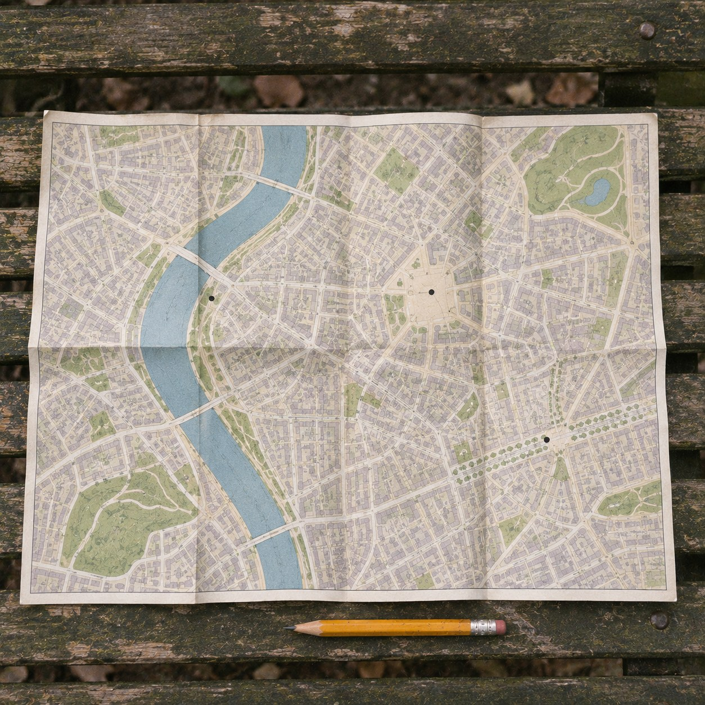
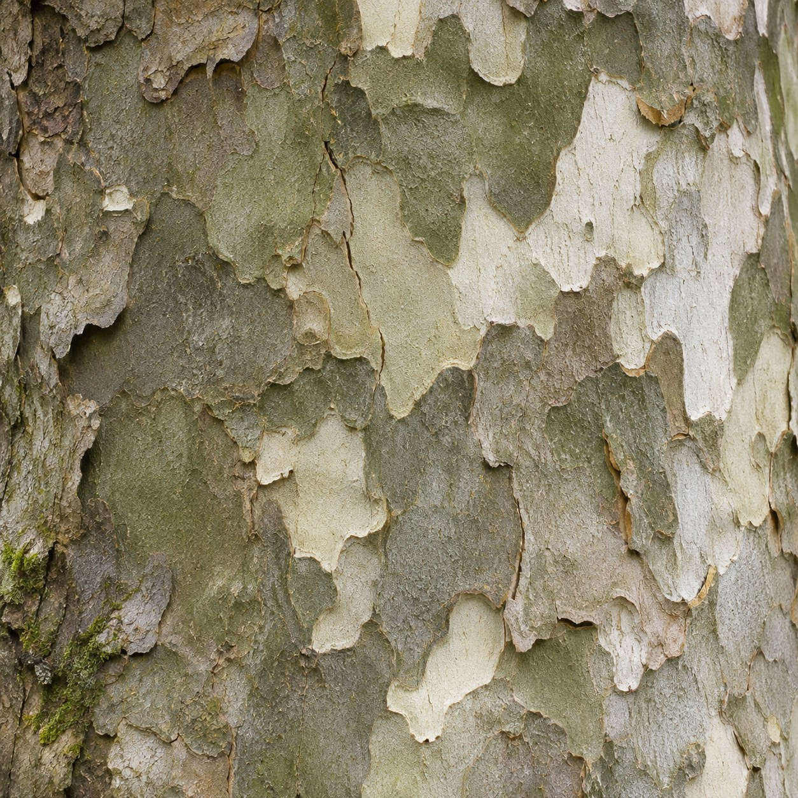
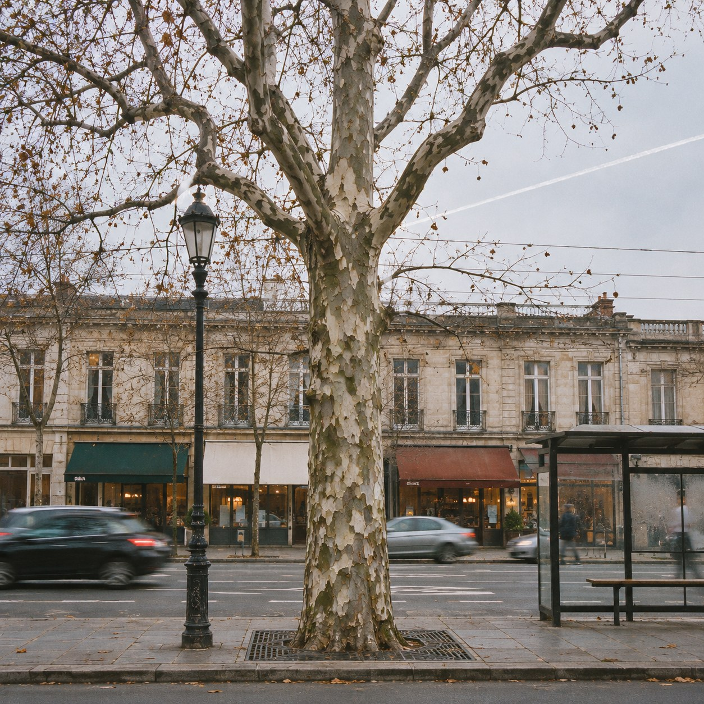

Nothing We Made



A city is a thing people made, and it goes almost all the way down. The pavement, the trees in their iron grates, the river in its stone sleeve, the light at night. Even the pigeons live on what we drop.
So I went looking for the gaps. Places in the city where you can stand, look straight ahead, and see nothing anyone made. Not a wire, not a kerb, not a vapour trail.
I found three. On this map they are three pencil dots. One is a knot of roots under a bridge, where the bank has never been cleared. One is a puddle that holds only sky, if you stand in the right spot and look down. One is the bark of an old plane tree, seen from so close that the street behind it is gone.
None of them is a wild place. Each one is a way of standing. Take one step and the city comes back. What is untouched there is not the ground. It is a narrow angle of looking, held still.
And at every dot there was someone standing. My eyes, my hands, the half of me that was built. So there was one made thing in each view after all, and I could not step out of the frame to take it away.
I am not sure the map is true. Maybe a place where nothing made can be seen only exists when no one is there to see it. I left the dots in pencil.